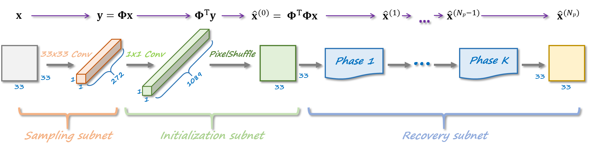
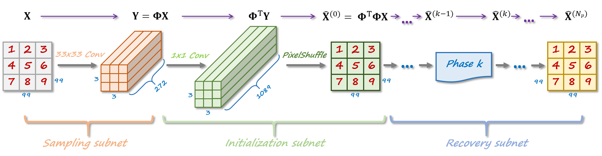
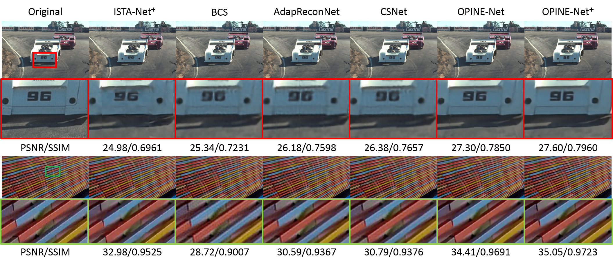

Abstract—In order to improve CS performance of natural images, in this paper, we propose a novel framework to design an OPtimization-INspired Explicable deep Network, dubbed OPINE-Net, for adaptive sampling and recovery. Both orthogonal and binary constraints of sampling matrix are incorporated into OPINE-Net simultaneously. In particular, OPINE-Net is composed of three subnets: sampling subnet, initialization subnet and recovery subnet, and all the parameters in OPINE-Net (\eg sampling matrix, nonlinear transforms, shrinkage threshold) are learned end-to-end, rather than hand-crafted. Moreover, considering the relationship among neighboring blocks, an enhanced version OPINE-Net$^+$ is developed, which allows image blocks to be sampled independently but reconstructed jointly to further enhance the performance. In addition, some interesting findings of learned sampling matrix are presented. Compared with existing state-of-the-art network-based CS methods, the proposed hardware-friendly OPINE-Nets not only achieve better performance but also require much fewer parameters and much less storage space, while maintaining a real-time running speed.

Fig. Illustrations of our proposed OPINE-net framework. Specifically, OPINE-Net is composed of three subnets: Sampling Subnet (SS), Initialization
Subnet (IS) and Recovery Subnet (RS).
Illustrations of our proposed OPINE-Net+ framework, which allows image blocks to be sampled independently but recovered jointly, greatly suppressing
blocking artifacts.

Fig. Visual comparison of all the competing CS methods.
Paper:
Optimization-Inspired Compact Deep Compressive Sensing
J. Zhang, C. Zhao, W. Gao
JSTSP 2020
[PDF] [PyTorch Code]